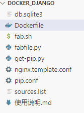

具体方法，利用DOCKERFILE创建镜像，配置web环境
文件结构

第一步，建立镜像
项目我放在阿里云codeup托管
docker build -t yemaobumei:webapp .- Dockerfile具体内容：
# 说明该镜像以哪个镜像为基础
FROM ubuntu:22.04
# 构建者的基本信息
MAINTAINER yemaobumei
# 拷贝本地文件到镜像中
RUN mkdir -p /root/app
COPY ./* /root/app/
# 更换pip源
RUN mkdir -p /root/.pip
COPY ./pip.conf /root/.pip
# 在build这个镜像时执行的操作
RUN cp /root/app/sources.list /etc/apt/
RUN apt update
RUN apt install -y ca-certificates
RUN apt install -y python2
RUN apt install -y nginx curl wget vim git python2-dev build-essential
RUN service nginx start
RUN cd /root/app/ && python2.7 get-pip.py
RUN pip install virtualenv 第二步，创建容器
-v 将本地源代码关联到容器内，不直接放入容器，避免泄露信息。
-p 本地端口8111关联到容器80端口
docker run -it --name test -v /home/ubuntu/sites/ephys.cn/source:/root/app/source -p 8111:80 yemaobumei:webapp /bin/bash第三步，配置web环境，主要是nginx
sh fab.sh- fab.sh具体内容
#!/bin/bash
user="root"
root_path='/root'
base_dir='/root/app/'
source_folder="/root/app/source"
virtualenv_folder='/root/app/virtualenv'
site_name="ephys.cn"
##创建需要的目录
list="database static virtualenv source"
for folder in $list;
do
if [ ! -d $folder ]; then
mkdir -p $folder
else
echo "$folder existed"
fi
done
cd $base_dir && cp db.sqlite3 "${base_dir}/database"
##直接修改源文件需要加 -i
sed -i 's/DEBUG = True/DEBUG = False/' "${source_folder}/mysite/settings.py"
sed -i "s/ALLOWED_HOSTS =.*$/ALLOWED_HOSTS = ['${site_name}','127.0.0.1',]/" "${source_folder}/mysite/settings.py"
virtualenv virtualenv
cd $source_folder && ../virtualenv/bin/pip install -r "requirements.txt"
cd $source_folder && ../virtualenv/bin/python manage.py collectstatic --noinput
cd $source_folder && ../virtualenv/bin/python manage.py makemigrations --noinput
#mkdir -p "${root_path}/sites/${site_name}"
cd $base_dir
#sed "s/SITENAME/${site_name}/g" nginx.template.conf | sed "s/USER/${user}/g" | tee "/etc/nginx/sites-available/${site_name}"
sed "s/SITENAME/${site_name}/g" nginx.template.conf | tee "/etc/nginx/sites-available/${site_name}"
ln -s "/etc/nginx/sites-available/${site_name}" "/etc/nginx/sites-enabled/${site_name}"
service nginx reload
#nginx静态资源403，原因修改/etc/nginx/nginx.conf
#user=www-data user=root- nginx.template.conf配置
server {
listen 80;
server_name SITENAME;
location /static {
alias /root/app/source/static;
}
location /media {
autoindex on;
alias /root/app/source/media;
}
location / {
proxy_set_header Host $host;
proxy_pass http://unix:/tmp/SITENAME.socket;
proxy_redirect off;
proxy_set_header X-Real-IP $remote_addr;
proxy_set_header X-Scheme $scheme;
proxy_set_header X-Forwarded-For $proxy_add_x_forwarded_for;
}
}最后，启动gunicorn监听端口
nohup ../virtualenv/bin/gunicorn -b unix:/tmp/ephys.cn.socket -w 5 mysite.wsgi:application > /dev/null 2>&1 &